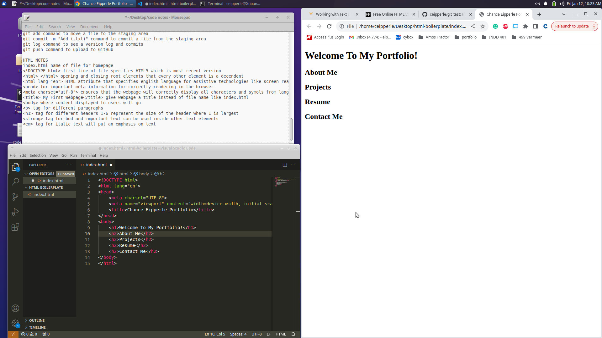
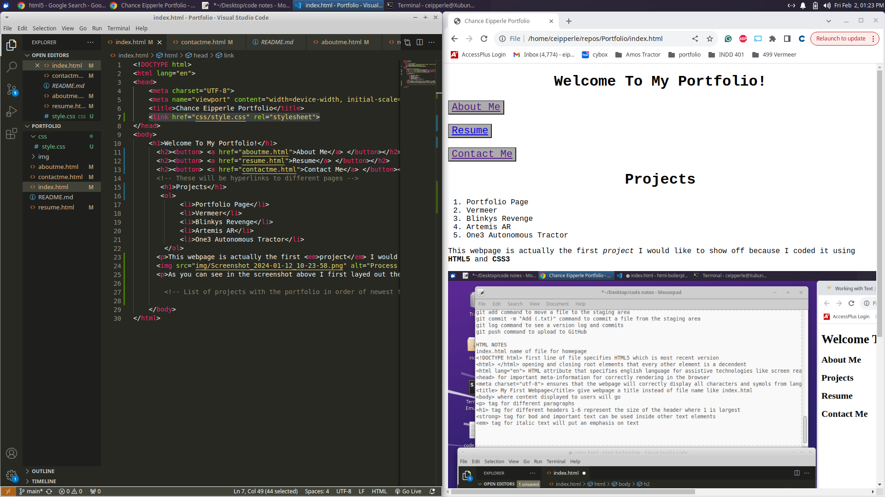

This webpage is actually the first project I would like to show off. I coded it using HTML5 and CSS3. As this website is one of my first forays into building using code insted of wireframing tools like Figma or popular site builders my main focus is usability with the second being the appearence. As I keep learing more about these coding tools this site will go through many updates and developments.
My goal for this site is to first and formost focus on usability my plan to achieve this is to include the many affordances we come to expect from the most popular wesites that we use everyday. Commonly used signifiers and layout will help anyone fimiliar with the internet be able to navigate through my Portfolio, be able to easily find to the pages they want to see, and the pages I want them to see.
I wanted to take screenshots of my work building this site as I went along to best show my development process. I hope that after you see this project you can acknowledge the work that went into the site as you explore the many pages.
As you can see in the screenshot above I first layed out the framework of my website with the index or home page utilising basic HTML5
I started adding more pages to my site for intuitive navigation along with a start to my list of past projects.